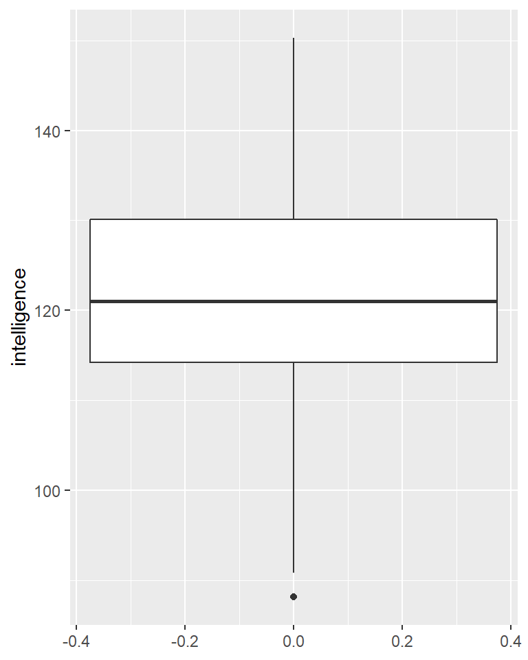
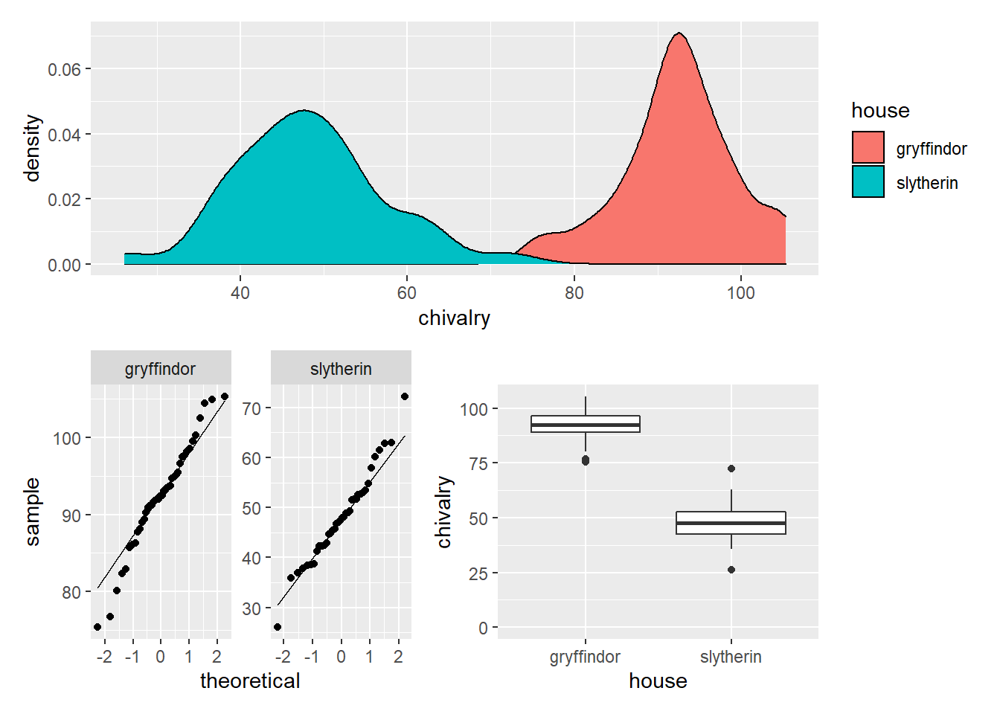

\(t\)-Tests
Einleitung
Der \(t\)-Test, oder besser gesagt die \(t\)-Tests, sind eine kleine Gruppe von statistischen Signifikanztests, mit denen man Gruppenunterschiede untersuchen kann. Meistens unterscheidet man zwischen dem
- Einstichproben-\(t\)-Test, dem
- \(t\)-Test mit unabhängigen Stichproben und dem
- \(t\)-Test mit abhängigen (oder verbundenen) Stichproben.
Na super, drei Tests – aber ich wollte doch nur einen Test machen! Welchen nehme ich denn jetzt?!
Den Einstichproben-\(t\)-Test benutzt man, wenn man eine Aussage darüber treffen will, ob sich eine Population im Mittelwert von einem vorgegebenen Wert unterscheidet. Stell Dir vor, Du hast zufällig die Größe von 80 Leuten in der Dortmunder Innenstadt gemessen, die im Schnitt 181,2 cm griß sind. Nun möchtest Du wissen, ob sich diese mittlere Größe von Dortmundern von einer anderen Population signifikant unterscheidet. Amerikaner sind im Durchschnitt 175,4 cm groß. Ist dieser Unterschied jetzt signifikant? Das kannst du mit einem Einstichproben-\(t\)-Test überprüfen, auch wenn man diese Fragestellung “in der freien Wildbahn” eigentlich nicht findet.
Der \(t\)-Test mit unabhängigen Stichproben ist in der Regel schon etwas anwendungsnäher, denn bei diesem wird untersucht, ob sich zwei Gruppen in ihrem Mittelwert unterscheiden. Beispielsweise möchtest Du untersuchen, ob sich die Kontrollgruppe am Ende einer Interventions-Studie signifikant von Deiner Interventionsgruppe unterscheidet. Im Gegensatz zum vorherigen Test, werden hier beide Mittelwerte erst einmal anhand der Probanden in den Gruppen bestimmt. Sollen also zwei Gruppen anhand einer kontinuierlichen Variable miteinander verglichen werden, ist das ein valider Ansatz. Liegen mehrere Gruppen vor, deren Mittelwerte Du anhand einer Variable auf signifikante Unterschiede vergleichen möchtest, dann solltest du über ein anderes Verfahren, wie die ANOVA nachdenken.
Der \(t\)-Test für abhängige, oder verbundene, Stichproben kommt zutragen, wenn die Unabhängigkeitsannahme (siehe Voraussetzungen im GLM) verletzt ist. Ein einfaches Beispiel wärst Du, der/die eine tolle Therapie für Patienten mit depressiver Störung entwickelt hat. Nun hast Du ein paar Patienten gefunden, die deine Therapie ausprobieren wollen und erhebst vor und nach der Therapie die mittlere “Depressivität”. Im Anschluss daran möchtest Du jetzt herausfinden, ob sich die Werte über die Zeit signifikant verbessert haben. Pro Proband hast du einen Prä- und einen Post-Wert (= vor und nach der Therapie), d.h., dass die Unabhängigkeitsannahme verletzt ist, weil mehrere Datenpunkte von einer Person kommen. Kein Problem, hier nutzt Du einfach den \(t\)-Test für verbundene Stichproben
Die Daten zum fleißigen Mitrechnen findest Du wie immer im Git-Repository.
Voraussetzungen
Es gelten die üblichen Voraussetzungen im GLM.
Pakete
Alle Tests können mit unseren Standard-Paketen durchgeführt werden. Mit den folgenden Befehlen sind wir startklar.
library(tidyverse)
library(haven)
library(rstatix)
library(skimr)Syntax
Die auf dieser Seite vorgestellten Tests werden alle durch die kreativ benannte Funktion t_test() abgedeckt. Wenn alle Daten im long format sind, dann sehen die Befehle wie folgt aus:
# Einstichproben-t-Test
t_test(data = <DATA>, formula = <DEPENDENT-VARIABLE> ~ 1, mu = <TEST-VALUE>)Die Formelschreibweise kennen wir schon von der linearen Regression, die Variable links der Tilde (~) wird durch die Variablen rechts der Tilde vorhergesagt. Da wir die abhängige Variable im ersten Fall jedoch nur durch einen einzigen Wert, nämlich dem Testwert, erklären wollen, steht dort eine 1. Mit mu geben wir den Wert an, gegen den getestet werden soll.
# t-Test bei unabhängigen Stichproben
t_test(data = <DATA>, formula = <DEP-VARIABLE> ~ <INDEP-VARIABLE>)
# t-Test bei verbundenen Stichproben
t_test(data = <DATA>, formula = <DEP-VARIABLE> ~ <INDEP-VARIABLE>, paired = TRUE)Diese Befehle sollten selbsterklärend sein, die abhängige Variable wird durch die unabhängige Variable (Gruppenzugehörigkeit oder Messzeitpunkt) vorhergesagt. Bei den abhängigen Stichproben, geben wir mit paired = TRUE lediglich noch weiter an, dass wir gepaarte, also abhängige Stichproben haben.
Beispiele

Begeben wir uns in die Welt der Magie, Muggel und Zauberstäbe; tauchen wir ein in die Welt von Harry Potter. Auch in Hogwarts gibt es viel zu entdecken und statistisch zu entschlüsseln.
Einstichproben-\(t\)-Test
Vielleicht kennst Du die vier Häuser von Hogwarts: Gryffindor, Hufflepuff, Ravenclaw und Slytherin. Jedem dieser Häuser werden verschiedene Eigenschaften nachgesagt, und jeder Schüler wird ausgehend von seinen Eigenschaften durch den sprechenden Hut einem der Häuser zugeteilt. Genau diese Eigenschaften der Schüler in den Häusern können wir uns nun einmal anschauen.
Das Haus Ravenclaw soll durch ausgesprochene Intelligenz punkten. Nun gut, gehen wir dem einmal auf den Grund. Der Intelligenzquotient (IQ) ist so normiert, dass sein Mittelwert normalerweise 100 beträgt und die Standardbweichung 15. Wir haben IQ-Daten von Mitgliedern des Hauses Ravenclaws im Datensatz ravenclaw.sav.
ravenclaw <- read_spss("data/ravenclav.sav")Voraussetzungen
Mit skim() und ggplot2 können wir uns die Daten etwas genauer angucken. Wichtig ist, dass die Voraussetzungen erfüllt sind.
skim(ravenclaw)| Name | ravenclaw |
| Number of rows | 48 |
| Number of columns | 2 |
| _______________________ | |
| Column type frequency: | |
| character | 1 |
| numeric | 1 |
| ________________________ | |
| Group variables | None |
Variable type: character
| skim_variable | n_missing | complete_rate | min | max | empty | n_unique | whitespace |
|---|---|---|---|---|---|---|---|
| id | 0 | 1 | 1 | 2 | 0 | 48 | 0 |
Variable type: numeric
| skim_variable | n_missing | complete_rate | mean | sd | p0 | p25 | p50 | p75 | p100 | hist |
|---|---|---|---|---|---|---|---|---|---|---|
| intelligence | 0 | 1 | 121.16 | 13.11 | 88.14 | 114.24 | 121 | 130.09 | 150.3 | ▁▃▇▅▂ |

Aus der Übersicht können wir entnehmen, dass wir erst einmal Daten von 48 Ravenclaws haben. Der IQ (von mir dreister- und fälschlicherweise als intelligence betitelt) der Stichprobe ist im Mittel bei 121 (sowohl Mittelwert als auch Median) – nicht schlecht! Die Standardabweichung beträgt 13.1, der niedrigste Wert 88.1 und der höchste 150.3. In Ravenclaw scheinen also ganz schöne Brains am Werke zu sein.
Durchführung
Wir haben nun eine gute Idee davon, in welche Richtung unsere Ergebnisse gehen könnten, aber unterscheidet sich dieser Wert jetzt vom Bevölkerungsdurchschnitt?
ravenclaw %>%
t_test(intelligence ~ 1, mu = 100)## # A tibble: 1 x 7
## .y. group1 group2 n statistic df p
## * <chr> <chr> <chr> <int> <dbl> <dbl> <dbl>
## 1 intelligence 1 null model 48 11.2 47 7.73e-15Interpretation
Der \(p\)-Wert ist unter 0.05, also ist der mittlere IQ der Ravenclaws signifikant verschieden von 100. Mehr gibt es an dieser Stelle eigentlich schon gar nicht zu sagen, der Einstichproben-\(t\)-Test ist relativ einfach.
Berichten
Will man diesen Unterschied berichten, dann kann man etwas schreiben wie:
Ravenclaws mean IQ was \(121.2\) (\(SD = 13.11\)), which was significantly different from the test value 100, \(t(47) = 11.18, p < .001\).
\(t\)-Test bei unabhängigen Stichproben
Es wird spannend, denn nun betrachten wir die Rivalität der Häuser Griffyndor und Slytherin. Dem Haus Griffyndor werden Tapferkeit, Kühnheit und Ritterlichkeit zugeschrieben – dem Haus Slytherin, naja, eher nicht. Im Datensatz chivalry.sav sind die Ergebnisse eines Persönlichkeitstests zu finden, den alle Bewohner dieser zwei Häuser durchführten, und der die Variable “Ritterlichkeit” erfasst. Der Gesamtwert dieses Tests kann Werte zwischen 0 (keine Richtterlichkeit vorhanden) und 110 (nimmt den Kampf gegen Voldemort auf und empfängt den Tod als einen alten Freund) annehmen.
chivalry_data <- read_spss("data/chivalry.sav")
chivalry_data <- chivalry_data %>% mutate(house = as_factor(house))Da wir wieder SPSS-Daten importieren, finden wir den merkwürdigen Datentyp <dbl+lbl>. Hier ist R nur mehr als freundlich zu uns, indem es uns beides, die Werte-Levels und -Labels gleichzeitig gibt. Für die Analysen benötigen wir jedoch nur die Labels als ordentliche Faktoren. Das beheben wir mit der Funktion as_factor() (siehe auch die Seite zum Data Wrangling).
Voraussetzungen
Auch hier überprüfen wir erst einmal die Voraussetzungen, bevor wir den Test durchführen.
chivalry_data %>%
group_by(house) %>%
skim()| Name | Piped data |
| Number of rows | 80 |
| Number of columns | 3 |
| _______________________ | |
| Column type frequency: | |
| character | 1 |
| numeric | 1 |
| ________________________ | |
| Group variables | house |
Variable type: character
| skim_variable | house | n_missing | complete_rate | min | max | empty | n_unique | whitespace |
|---|---|---|---|---|---|---|---|---|
| id | gryffindor | 0 | 1 | 1 | 2 | 0 | 42 | 0 |
| id | slytherin | 0 | 1 | 2 | 2 | 0 | 38 | 0 |
Variable type: numeric
| skim_variable | house | n_missing | complete_rate | mean | sd | p0 | p25 | p50 | p75 | p100 | hist |
|---|---|---|---|---|---|---|---|---|---|---|---|
| chivalry | gryffindor | 0 | 1 | 92.33 | 6.86 | 75.34 | 89.06 | 92.38 | 96.31 | 105.33 | ▂▂▇▆▃ |
| chivalry | slytherin | 0 | 1 | 48.09 | 8.94 | 26.06 | 42.36 | 47.63 | 52.65 | 72.20 | ▁▅▇▂▁ |

Wir sehen einen eindeutigen Trend dahingehend, dass sich die Mitglieder Griffyndors als deutlicher ritterlicher einschätzen (\(M = 92.3, SD = 6.9\)) als die Mitglieder der Hauses Slytherin (\(M = 48.1, SD = 8.94\)). Auch in der Abbildung sehen wir diesen Unterschied deutlich. Die Boxplots zeigen uns insgesamt 4 Outlier, zwei in jedem Haus. Die könnte man bei Bedarf entfernen, wir belassen es jedoch dabei und fahren fort, auch weil die Varianz der Daten in beiden Häusern ähnlich zu sein scheint.
Wer auf Tests zur Überprüfung der Voraussetzungen besteht (ein Vorgehen, von dem ich entschieden abrate), der kann diese so durchführen.
chivalry_data %>%
group_by(house) %>%
shapiro_test(chivalry)## # A tibble: 2 x 4
## house variable statistic p
## <fct> <chr> <dbl> <dbl>
## 1 gryffindor chivalry 0.973 0.420
## 2 slytherin chivalry 0.980 0.711chivalry_data %>%
levene_test(chivalry ~ house)## # A tibble: 1 x 4
## df1 df2 statistic p
## <int> <int> <dbl> <dbl>
## 1 1 78 2.11 0.151Also auch anand der Tests können wir in diesem Falle festhalten, dass die Daten nicht signifikant von einer theoretischen Normalverteilung abweichen und die Varianzen in beiden Häusern auch nicht signifikant verschieden sind. Diese Ergebnisse heißen jedoch nicht, dass die Daten normalverteilt und die Varianzen homogen sind.
Durchführung
chivalry_data %>%
t_test(chivalry ~ house)## # A tibble: 1 x 8
## .y. group1 group2 n1 n2 statistic df p
## * <chr> <chr> <chr> <int> <int> <dbl> <dbl> <dbl>
## 1 chivalry gryffindor slytherin 42 38 24.6 69.2 5.59e-36Ja, die beiden Mitglieder der Häuser unterscheiden sich in ihrer selbst eingeschätzten Ritterlichkeit signifikant voneinander, da \(p < 0.05\) ist. Wer sich die Daten in einem anderen Statistikprogramm vorgenommen und mitgerechnet hat, vielleicht sogar direkt in SPSS, der wird feststellen, dass die Werte etwas von seinen abweichen. Das liegt daran, dass R standardmäßig gar nicht den traditionellen \(t\)-Test (auch Student’s \(t\)-Test genannt) berechnet, sondern den Welch-Test. Den kennen viele Psychologie-Studenten eigentlich als Alternative zum \(t\)-Test, wenn die Voraussetzungen der Normalverteilung und Varianzhomogenität verletzt sind. Eigentlich sollte er jedoch standardmäßig durchgeführt werden, wie R es auch anbietet (Rasch et al., 2011; Ruxton, 2006). Wer dennoch unbedingt den “richtigen” \(t\)-Test haben möchte, gibt einfach ein zusätzliches Argument an und schon stimmt wieder alles.
chivalry_data %>%
t_test(chivalry ~ house, var.equal = TRUE)## # A tibble: 1 x 8
## .y. group1 group2 n1 n2 statistic df p
## * <chr> <chr> <chr> <int> <int> <dbl> <dbl> <dbl>
## 1 chivalry gryffindor slytherin 42 38 25.0 78 6.13e-39Bei Gruppenunterschieden ist nicht nur interessant, ob sich diese statistisch signifikant voneinander unterscheiden; vor allem interessiert uns die Größe des Effekts, also die Effektstärke. Auch diese lässt sich einfach berechnen. Hier sollte man immer das Argument hedges.correction = TRUE angeben, da Cohens \(d\) von Haus aus positiv verzerrt ist (Hedges & Olkin, 1985).
chivalry_data %>%
cohens_d(chivalry ~ house, hedges.correction = TRUE)## # A tibble: 1 x 7
## .y. group1 group2 effsize n1 n2 magnitude
## * <chr> <chr> <chr> <dbl> <int> <int> <ord>
## 1 chivalry gryffindor slytherin 5.50 42 38 largeBerichten
Members of the Hogwarts house “Gryffindor” yielded greater greater scores on a test estimating chivalry as opposed to members of house “Slytherin”. The mean difference of 44.2 points was statistically significant, \(t(69.2) = 24.6, p < .001\) with an effect size of Hedges’ \(g = 5.50\), indicating a huge effect.
Robuste Alternativen
Folgt.
Aus der Praxis
Praxis-Beispiele folgen.
Literatur
Hedges, L. V., & Olkin, I. (1985). Statistical Methods for Meta-Analysis. Academic Press.
Rasch, D., Kubinger, K. D., & Moder, K. (2011). The two-sample t test: pre-testing its assumptions does not pay off. Statistical Papers, 52(1), 219–231. https://doi.org/10.1007/s00362-009-0224-x
Ruxton, G. D. (2006). The unequal variance t-test is an underused alternative to Student’s t-test and the Mann–Whitney U test. Behavioral Ecology, 17(4), 688–690. https://doi.org/10.1093/beheco/ark016